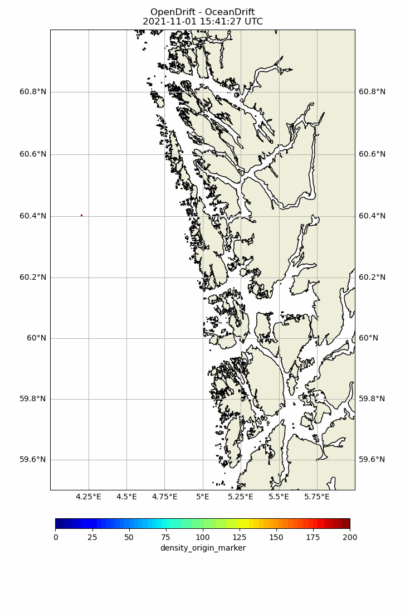

Note
Click here to download the full example code
Analysing huge output files
import os
from datetime import datetime, timedelta
import opendrift
from opendrift.models.oceandrift import OceanDrift
from opendrift.readers import reader_oscillating
First make a simulation with two seedings, marked by origin_marker
o = OceanDrift(loglevel=50)
t1 = datetime.now()
t2 = t1 + timedelta(hours=6)
number = 10000
outfile = 'simulation.nc' # Raw simulation output
analysis_file = 'simulation_density.nc'
o.seed_elements(time=t1, lon=4, lat=60, number=number,
origin_marker=0)
o.seed_elements(time=[t1, t2], lon=4.2, lat=60.4, number=number,
origin_marker=1)
reader_x = reader_oscillating.Reader('x_sea_water_velocity',
amplitude=1, zero_time=t1)
reader_y = reader_oscillating.Reader('y_sea_water_velocity',
amplitude=1, zero_time=t2)
o.add_reader([reader_x, reader_y])
o.set_config('drift:horizontal_diffusivity', 10)
o.run(duration=timedelta(hours=24),
time_step=900, time_step_output=1800, outfile=outfile)
Opening the output file lazily with Xarray. This will work even if the file is too large to fit in memory, as it will read and process data chuck-by-chunk directly from file using Dask. (See also example_river_runoff.py) Note that the analysis file will be re-used if existing. Thus this file should be deleted after making any changes to the simulation above.
oa = opendrift.open_xarray(outfile, analysis_file=analysis_file)
oa.get_density_xarray(pixelsize_m=500)
Out:
13:03:14 DEBUG opendrift.models.basemodel: Adding 17 config items from basemodel
13:03:14 DEBUG opendrift.models.basemodel: Adding 4 config items from basemodel
13:03:14 DEBUG opendrift.models.basemodel: Adding 36 config items from basemodel
13:03:14 INFO opendrift.models.basemodel: OpenDriftSimulation initialised (version 1.7.1 / v1.7.1-110-ge1b7265)
13:03:14 DEBUG opendrift.models.basemodel: Adding 14 config items from oceandrift
13:03:14 DEBUG opendrift.models.basemodel: Overwriting config item seed:z
13:03:14 DEBUG opendrift.export.io_netcdf: Importing with Xarray from simulation.nc
13:03:14 INFO opendrift: Returning <class 'opendrift.models.oceandrift.OceanDrift'> object
13:03:14 INFO opendrift.models.basemodel: Calculating density array, this may take some time...
13:03:14 INFO opendrift.models.basemodel: calculating for origin_marker 0...
13:03:14 INFO opendrift.models.basemodel: calculating for origin_marker 1...
13:03:15 INFO opendrift.models.basemodel: Time to calculate density array: 0:00:00.326582
(<xarray.DataArray 'density_origin_marker' (time: 49, lon_bin: 115, lat_bin: 172)>
array([[[0., 0., 0., ..., 0., 0., 0.],
[0., 0., 0., ..., 0., 0., 0.],
[0., 0., 0., ..., 0., 0., 0.],
...,
[0., 0., 0., ..., 0., 0., 0.],
[0., 0., 0., ..., 0., 0., 0.],
[0., 0., 0., ..., 0., 0., 0.]],
[[0., 0., 0., ..., 0., 0., 0.],
[0., 0., 0., ..., 0., 0., 0.],
[0., 0., 0., ..., 0., 0., 0.],
...,
[0., 0., 0., ..., 0., 0., 0.],
[0., 0., 0., ..., 0., 0., 0.],
[0., 0., 0., ..., 0., 0., 0.]],
[[0., 0., 0., ..., 0., 0., 0.],
[0., 0., 0., ..., 0., 0., 0.],
[0., 0., 0., ..., 0., 0., 0.],
...,
...
...,
[0., 0., 0., ..., 0., 0., 0.],
[0., 0., 0., ..., 0., 0., 0.],
[0., 0., 0., ..., 0., 0., 0.]],
[[0., 0., 0., ..., 0., 0., 0.],
[0., 0., 0., ..., 0., 0., 0.],
[0., 0., 0., ..., 0., 0., 0.],
...,
[0., 0., 0., ..., 0., 0., 0.],
[0., 0., 0., ..., 0., 0., 0.],
[0., 0., 0., ..., 0., 0., 0.]],
[[0., 0., 0., ..., 0., 0., 0.],
[0., 0., 0., ..., 0., 0., 0.],
[0., 0., 0., ..., 0., 0., 0.],
...,
[0., 0., 0., ..., 0., 0., 0.],
[0., 0., 0., ..., 0., 0., 0.],
[0., 0., 0., ..., 0., 0., 0.]]])
Dimensions without coordinates: time, lon_bin, lat_bin, <xarray.DataArray 'density_origin_marker' (time: 49, lon_bin: 115, lat_bin: 172, origin_marker: 2)>
array([[[[0., 0.],
[0., 0.],
[0., 0.],
...,
[0., 0.],
[0., 0.],
[0., 0.]],
[[0., 0.],
[0., 0.],
[0., 0.],
...,
[0., 0.],
[0., 0.],
[0., 0.]],
[[0., 0.],
[0., 0.],
[0., 0.],
...,
...
...,
[0., 0.],
[0., 0.],
[0., 0.]],
[[0., 0.],
[0., 0.],
[0., 0.],
...,
[0., 0.],
[0., 0.],
[0., 0.]],
[[0., 0.],
[0., 0.],
[0., 0.],
...,
[0., 0.],
[0., 0.],
[0., 0.]]]])
Dimensions without coordinates: time, lon_bin, lat_bin, origin_marker, array([3.97748212, 3.98656988, 3.99565764, 4.00474539, 4.01383315,
4.02292091, 4.03200866, 4.04109642, 4.05018418, 4.05927193,
4.06835969, 4.07744745, 4.0865352 , 4.09562296, 4.10471072,
4.11379847, 4.12288623, 4.13197399, 4.14106174, 4.1501495 ,
4.15923726, 4.16832501, 4.17741277, 4.18650053, 4.19558828,
4.20467604, 4.21376379, 4.22285155, 4.23193931, 4.24102706,
4.25011482, 4.25920258, 4.26829033, 4.27737809, 4.28646585,
4.2955536 , 4.30464136, 4.31372912, 4.32281687, 4.33190463,
4.34099239, 4.35008014, 4.3591679 , 4.36825566, 4.37734341,
4.38643117, 4.39551893, 4.40460668, 4.41369444, 4.4227822 ,
4.43186995, 4.44095771, 4.45004546, 4.45913322, 4.46822098,
4.47730873, 4.48639649, 4.49548425, 4.504572 , 4.51365976,
4.52274752, 4.53183527, 4.54092303, 4.55001079, 4.55909854,
4.5681863 , 4.57727406, 4.58636181, 4.59544957, 4.60453733,
4.61362508, 4.62271284, 4.6318006 , 4.64088835, 4.64997611,
4.65906386, 4.66815162, 4.67723938, 4.68632713, 4.69541489,
4.70450265, 4.7135904 , 4.72267816, 4.73176592, 4.74085367,
4.74994143, 4.75902919, 4.76811694, 4.7772047 , 4.78629246,
4.79538021, 4.80446797, 4.81355573, 4.82264348, 4.83173124,
4.840819 , 4.84990675, 4.85899451, 4.86808227, 4.87717002,
4.88625778, 4.89534553, 4.90443329, 4.91352105, 4.9226088 ,
4.93169656, 4.94078432, 4.94987207, 4.95895983, 4.96804759,
4.97713534, 4.9862231 , 4.99531086, 5.00439861, 5.01348637,
5.02257413]), array([59.89715641, 59.90166092, 59.90616542, 59.91066993, 59.91517443,
59.91967894, 59.92418344, 59.92868795, 59.93319245, 59.93769696,
59.94220146, 59.94670596, 59.95121047, 59.95571497, 59.96021948,
59.96472398, 59.96922849, 59.97373299, 59.9782375 , 59.982742 ,
59.9872465 , 59.99175101, 59.99625551, 60.00076002, 60.00526452,
60.00976903, 60.01427353, 60.01877804, 60.02328254, 60.02778705,
60.03229155, 60.03679605, 60.04130056, 60.04580506, 60.05030957,
60.05481407, 60.05931858, 60.06382308, 60.06832759, 60.07283209,
60.07733659, 60.0818411 , 60.0863456 , 60.09085011, 60.09535461,
60.09985912, 60.10436362, 60.10886813, 60.11337263, 60.11787714,
60.12238164, 60.12688614, 60.13139065, 60.13589515, 60.14039966,
60.14490416, 60.14940867, 60.15391317, 60.15841768, 60.16292218,
60.16742668, 60.17193119, 60.17643569, 60.1809402 , 60.1854447 ,
60.18994921, 60.19445371, 60.19895822, 60.20346272, 60.20796723,
60.21247173, 60.21697623, 60.22148074, 60.22598524, 60.23048975,
60.23499425, 60.23949876, 60.24400326, 60.24850777, 60.25301227,
60.25751678, 60.26202128, 60.26652578, 60.27103029, 60.27553479,
60.2800393 , 60.2845438 , 60.28904831, 60.29355281, 60.29805732,
60.30256182, 60.30706632, 60.31157083, 60.31607533, 60.32057984,
60.32508434, 60.32958885, 60.33409335, 60.33859786, 60.34310236,
60.34760687, 60.35211137, 60.35661587, 60.36112038, 60.36562488,
60.37012939, 60.37463389, 60.3791384 , 60.3836429 , 60.38814741,
60.39265191, 60.39715641, 60.40166092, 60.40616542, 60.41066993,
60.41517443, 60.41967894, 60.42418344, 60.42868795, 60.43319245,
60.43769696, 60.44220146, 60.44670596, 60.45121047, 60.45571497,
60.46021948, 60.46472398, 60.46922849, 60.47373299, 60.4782375 ,
60.482742 , 60.4872465 , 60.49175101, 60.49625551, 60.50076002,
60.50526452, 60.50976903, 60.51427353, 60.51877804, 60.52328254,
60.52778705, 60.53229155, 60.53679605, 60.54130056, 60.54580506,
60.55030957, 60.55481407, 60.55931858, 60.56382308, 60.56832759,
60.57283209, 60.57733659, 60.5818411 , 60.5863456 , 60.59085011,
60.59535461, 60.59985912, 60.60436362, 60.60886813, 60.61337263,
60.61787714, 60.62238164, 60.62688614, 60.63139065, 60.63589515,
60.64039966, 60.64490416, 60.64940867, 60.65391317, 60.65841768,
60.66292218, 60.66742668, 60.67193119]))
Making two animations, for each of the two seedings / origin_markers. The calculated density fields will be stored/cached in the analysis file for later re-use, as their calculation may be time consuming for huge output files. Note that other analysis/plotting methods are not yet adapted to datasets opened lazily with open_xarray
for om in [0, 1]:
background=oa.ads.density_origin_marker.isel(origin_marker=om)
oa.animation(background=background.where(background>0), bgalpha=1,
corners=[4.0, 6, 59.5, 61], fast=False, show_elements=False, vmin=0, vmax=200)
# Cleaning up
os.remove(outfile)
os.remove(analysis_file)
Out:
13:03:15 DEBUG opendrift.models.basemodel: Finding min longitude...
13:03:15 DEBUG opendrift.models.basemodel: Finding max longitude...
13:03:15 DEBUG opendrift.models.basemodel: Finding min latitude...
13:03:15 DEBUG opendrift.models.basemodel: Finding max latitude...
13:03:15 DEBUG opendrift.readers.reader_global_landmask: Using existing GSHHS shapes..
13:03:15 DEBUG opendrift_landmask_data.mask: mask already memmapped
13:03:35 INFO opendrift.models.basemodel: Saving animation to /root/project/docs/source/gallery/animations/example_huge_output_0.gif...
13:03:35 INFO opendrift.models.basemodel: Making animated gif...
MovieWriter imagemagick unavailable; using Pillow instead.
13:04:25 DEBUG opendrift.models.basemodel: Time to make animation: 0:01:09.992390
13:04:25 DEBUG opendrift.models.basemodel: Finding min longitude...
13:04:25 DEBUG opendrift.models.basemodel: Finding max longitude...
13:04:25 DEBUG opendrift.models.basemodel: Finding min latitude...
13:04:25 DEBUG opendrift.models.basemodel: Finding max latitude...
13:04:25 DEBUG opendrift.readers.reader_global_landmask: Using existing GSHHS shapes..
13:04:25 DEBUG opendrift_landmask_data.mask: mask already memmapped
13:04:45 INFO opendrift.models.basemodel: Saving animation to /root/project/docs/source/gallery/animations/example_huge_output_1.gif...
13:04:45 INFO opendrift.models.basemodel: Making animated gif...
MovieWriter imagemagick unavailable; using Pillow instead.
13:05:29 DEBUG opendrift.models.basemodel: Time to make animation: 0:01:04.100623
First seeding
Second seeding
Total running time of the script: ( 2 minutes 55.000 seconds)